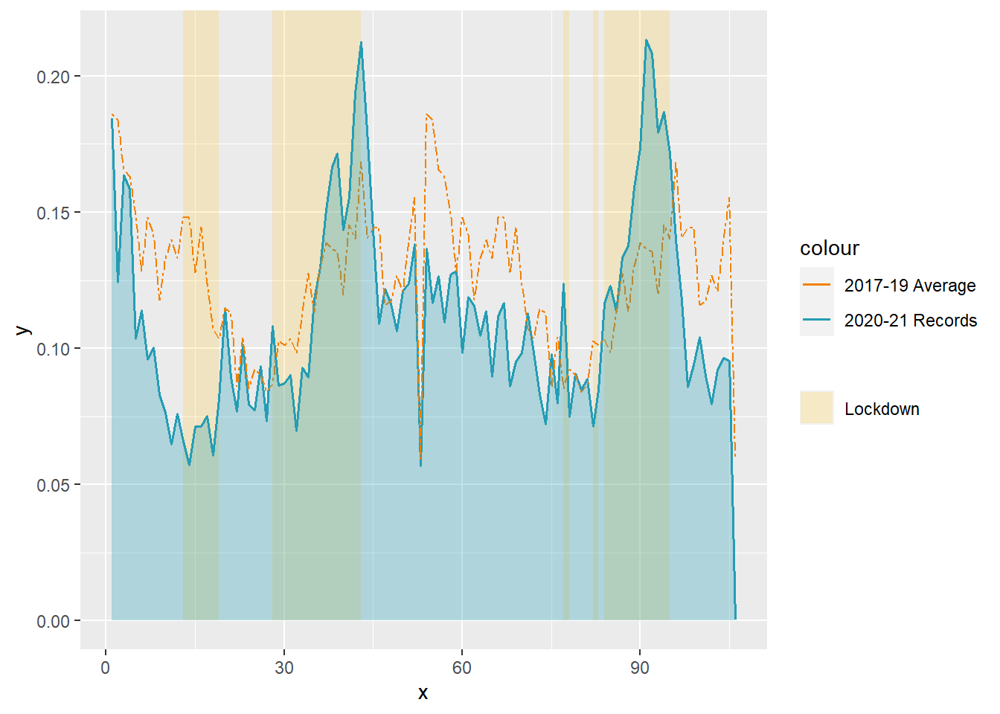
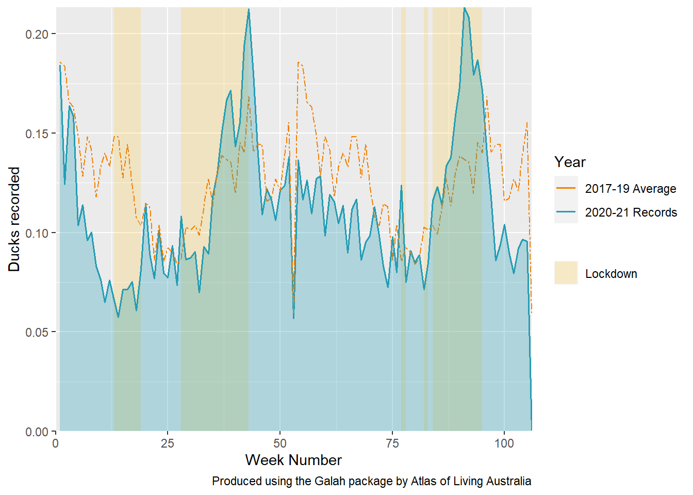

# Load packages
library(galah)
library(tidyverse)
library(lubridate)
library(ggplot2)
library(pilot) # remotes::install_github("olihawkins/pilot")
library(showtext)
library(cowplot)
library(magick)
library(cropcircles)Visualising ALA Data using galah and ggplot2
12 weeks ago I entered into an internship with the Atlas of Living Australia. I already had some knowledge of the database and basic R-Studio skills, but only what I could obtain from university classes for my ecology bachelor’s degree. The task seemed straightforward: to ‘make something cool’ and share the results. The following is one example of what’s achievable with ALA data for a first-time user of the galah package.
galah_config(email = "thai.rushbrook@gmail.com", #Add ALA registered email address
verbose = FALSE) #Remove all messages in galahIn combination, the galah package and ggplot2 are powerful tools to produce visual representations of Atlas of Living Australia (ALA) data. To show this, we’ll be using the following research question as an example; Was the number of ducks recorded in Melbourne significantly different in the Covid-19 lockdown periods of 2020-21 compared to 2017-19?
We will be analysing the number of weekly occurrence records as this provides a fine level of detail without the extra noise of daily variation in the final product.
Step 1: Gathering data
During the height of the pandemic, Melbourne had 6 distinct lockdowns. It’s easiest to start by forming a table with the start and end date of each lockdown period so we can refer back to this periodically. We also add columns for the start and end date as a week of the year, which becomes helpful when plotting our data later.
Lockdown <- c(1:6) #Set lockdown numbers 1-6
Start <- c("2020-03-31", "2020-07-09", "2021-02-13", "2021-05-28", "2021-07-16", "2021-08-05") #Start dates of each lockdown period (in order)
End <- c("2020-05-12", "2020-10-27", "2021-02-17", "2021-06-10", "2021-07-27", "2021-10-21") #End dates of each lockdown period (in order)
Melb_dates <- data.frame(Lockdown, Start, End) #Combine into a data frame
Melb_dates$Num_Days <- as.Date(as.character(Melb_dates$End), format="%Y-%m-%d")-
as.Date(as.character(Melb_dates$Start), format="%Y-%m-%d") #Convert dates to date/time format
Melb_dates <- Melb_dates |>
mutate(weekstart = week(Start)) |> #Add a column converting start date into week of the year
mutate(weekend = week(End)) #Add a column converting end date into week of the year
Melb_dates #View results Lockdown Start End Num_Days weekstart weekend
1 1 2020-03-31 2020-05-12 42 days 13 19
2 2 2020-07-09 2020-10-27 110 days 28 43
3 3 2021-02-13 2021-02-17 4 days 7 7
4 4 2021-05-28 2021-06-10 13 days 22 23
5 5 2021-07-16 2021-07-27 11 days 29 30
6 6 2021-08-05 2021-10-21 77 days 31 42We will need to filter to specify results from Melbourne only, from 2017-2021. Searching with search_fields for a relevant term (e.g.‘city’) returns any matching fields, then from there we can search for the correct value using the field ID we just returned.
search_fields("city") #Search for fields containing 'city'# A tibble: 1 × 4
id description type link
<chr> <chr> <chr> <chr>
1 cl10929 PSMA ABS Greater Capital City Statistical Areas (2016) AB… laye… http…search_fields("cl10929") |> #Search for values of that field using the ID
show_values()• Showing values for 'cl10929'.# A tibble: 16 × 2
field category
<chr> <chr>
1 cl10929 REST OF NSW
2 cl10929 REST OF VIC.
3 cl10929 REST OF QLD
4 cl10929 GREATER MELBOURNE
5 cl10929 REST OF SA
6 cl10929 GREATER SYDNEY
7 cl10929 GREATER BRISBANE
8 cl10929 REST OF WA
9 cl10929 AUSTRALIAN CAPITAL TERRITORY
10 cl10929 REST OF NT
11 cl10929 REST OF TAS.
12 cl10929 GREATER ADELAIDE
13 cl10929 GREATER PERTH
14 cl10929 GREATER DARWIN
15 cl10929 GREATER HOBART
16 cl10929 OTHER TERRITORIES search_fields("date") #Search for fields containing 'date'# A tibble: 21 × 4
id description type link
<chr> <chr> <chr> <chr>
1 month "Month of observation, specimen collection date.… fiel… <NA>
2 eventDate "The ISO formatted date of observation, specimen… fiel… <NA>
3 cl10903 "Tenure of Australia's forests (2013) v2.0 Tenur… laye… http…
4 cl10955 "National Indicative Aggregated Fire Extent Data… laye… http…
5 lastLoadDate <NA> fiel… <NA>
6 datePrecision "The precision of the date information for the r… fiel… <NA>
7 eventDateEnd <NA> fiel… <NA>
8 dateIdentified "http://rs.tdwg.org/dwc/terms/dateIdentified" fiel… <NA>
9 raw_eventDate <NA> fiel… <NA>
10 firstLoadedDate <NA> fiel… <NA>
# … with 11 more rowssearch_fields("eventDate") |> #Search for values of that field using the ID
show_values()! Search returned 4 matched fields.
• Showing values for 'eventDate'.# A tibble: 10,000 × 2
field category
<chr> <chr>
1 eventDate 1969-12-31T14:00:00Z
2 eventDate 1979-12-31T13:00:00Z
3 eventDate 1980-09-30T14:00:00Z
4 eventDate 1998-12-31T13:00:00Z
5 eventDate 1989-12-31T13:00:00Z
6 eventDate 2000-12-31T13:00:00Z
7 eventDate 1976-12-31T13:00:00Z
8 eventDate 1992-02-29T13:00:00Z
9 eventDate 1996-01-18T13:00:00Z
10 eventDate 2004-06-30T14:00:00Z
# … with 9,990 more rowsFrom here on we know we can filter for Melbourne results using ‘GREATER MELBOURNE’. We apply this when using atlas_occurrences to call ALA duck records matching our enquiry. The galah_select function can be used to only return the date of each record, as the other information stored in the ALA database is not relevant.
Ducksbyweek_data <- data.frame(
galah_call() |> #Call ALA data
galah_identify("Anatidae")|> #Identify ducks
galah_filter(cl10929 == "GREATER MELBOURNE", eventDate >= "2017-01-01T00:00:00Z", eventDate <= "2021-12-31T23:59:00Z") |> #Filter for 2017-2021 records in Melbourne
galah_select(eventDate) |> #Retrieve only event date of each entry
atlas_occurrences())
Ducksbyweek_data |> head(6L) #View first 6 results eventDate
1 2017-01-01T13:00:00Z
2 2017-01-01T13:00:00Z
3 2017-01-01T13:00:00Z
4 2017-01-01T13:00:00Z
5 2017-01-01T13:00:00Z
6 2017-01-01T13:00:00ZThis produces a data frame with a list of all occurrences. We need to combine these to produce a tally of occurrence records for each date.
Ducksbyweek_table <- Ducksbyweek_data #Create new data frame from previous
Ducksbyweek_table$eventDate <- #Add a new column for event date
as.Date(as.character(Ducksbyweek_table$eventDate),format="%Y-%m-%d") #Change event date to date format (year-month-day)
Ducksbyweek_table <- Ducksbyweek_table |>
count(eventDate) #Add column counting the number of occurrences of each date
Ducksbyweek_table <- Ducksbyweek_table |>
mutate(year = year(eventDate)) |> #Add a column with only the year of record
mutate(week = week(eventDate)) #Add a column with the week (of the year) of record
colnames(Ducksbyweek_table) = c("date","count", "year", "week") #Set column names
Ducksbyweek_table |> head(6L) #View first 6 results date count year week
1 2017-01-01 156 2017 1
2 2017-01-02 94 2017 1
3 2017-01-03 99 2017 1
4 2017-01-04 113 2017 1
5 2017-01-05 74 2017 1
6 2017-01-06 82 2017 1To get a fair representation of the differences for comparison, we need to scale the results for the total number of Atlas records each year. We are interested in how occurrences changed between years, without the influence of generally increasing popularity of the database over time. We can do this by looking at the number of duck occurrences as a proportion of overall records. For this, we need to create a data frame with the overall number of records in Melbourne each year for use in the next step.
Allmelbrecords_data <- as.data.frame(
galah_call() |>
galah_filter(cl10929 == "GREATER MELBOURNE", year >= 2017, year <= 2021) |>
galah_group_by(year) |> #Summarise the number of occurrence records for each year
atlas_counts())
Allmelbrecords_data <- Allmelbrecords_data |> arrange(desc(year)) #Sort by year in descending order (2020-21)
Allmelbrecords_data #View results year count
1 2021 916964
2 2020 749289
3 2019 548033
4 2018 580995
5 2017 495291Step 2: Organising data
It’s far easier to scale each value with everything organised into columns according to year. We can achieve this by using pivot_wider, and then scaling each column according to the corresponding value in the table of total records we just created.
Ducksbyweek_scaled <- Ducksbyweek_table |> pivot_wider(
names_from = year, #Take column names from 'year' data column
values_from = count, #Take values from 'count' data column
names_sort = TRUE) #Order columns names (i.e. years)
Ducksbyweek_scaled$"2017" = (Ducksbyweek_scaled$"2017"/Allmelbrecords_data[5,2])*100 #Counts in 2017 column, divided by the overall number of records in 2017 (multiplied by 100) returns counts as a proportion of overall records
Ducksbyweek_scaled$"2018" = (Ducksbyweek_scaled$"2018"/Allmelbrecords_data[4,2])*100
Ducksbyweek_scaled$"2019" = (Ducksbyweek_scaled$"2019"/Allmelbrecords_data[3,2])*100
Ducksbyweek_scaled$"2020" = (Ducksbyweek_scaled$"2020"/Allmelbrecords_data[2,2])*100
Ducksbyweek_scaled$"2021" = (Ducksbyweek_scaled$"2021"/Allmelbrecords_data[1,2])*100
Ducksbyweek_scaled #View results# A tibble: 1,826 × 7
date week `2017` `2018` `2019` `2020` `2021`
<date> <dbl> <dbl> <dbl> <dbl> <dbl> <dbl>
1 2017-01-01 1 0.0315 NA NA NA NA
2 2017-01-02 1 0.0190 NA NA NA NA
3 2017-01-03 1 0.0200 NA NA NA NA
4 2017-01-04 1 0.0228 NA NA NA NA
5 2017-01-05 1 0.0149 NA NA NA NA
6 2017-01-06 1 0.0166 NA NA NA NA
7 2017-01-07 1 0.0210 NA NA NA NA
8 2017-01-08 2 0.0204 NA NA NA NA
9 2017-01-09 2 0.0166 NA NA NA NA
10 2017-01-10 2 0.0273 NA NA NA NA
# … with 1,816 more rowsOur data is now organised and appropriately scaled, however contains a number of ‘NA’ values which would make it extremely difficult to calculate the mean of 2017-19 counts later on. To remove these, we need to put the data frame back in it’s original format using pivot_longer.
Ducksbyweek_long <- Ducksbyweek_scaled |>
pivot_longer(cols=c("2017", "2018", "2019", "2020", "2021"), #Select columns to pivot
names_to = "year", #Columns names to go to new column titled 'year'
values_to = "count") #Values to go to new column titled 'count'
Ducksbyweek_long <- na.omit(Ducksbyweek_long) #Remove entries with 'NA'
Ducksbyweek_long |> head(6L) #View first 6 results# A tibble: 6 × 4
date week year count
<date> <dbl> <chr> <dbl>
1 2017-01-01 1 2017 0.0315
2 2017-01-02 1 2017 0.0190
3 2017-01-03 1 2017 0.0200
4 2017-01-04 1 2017 0.0228
5 2017-01-05 1 2017 0.0149
6 2017-01-06 1 2017 0.0166As mentioned previously, we are interested in narrowing this down to the number of occurrences by week rather than daily.
Ducksbyweek_grouped <- Ducksbyweek_long
Ducksbyweek_grouped <- data.frame(Ducksbyweek_grouped |>
group_by(week,year) |> #Group by week and year
summarise(across(c(count), sum))) #Sum 'count' numbers in each group
Ducksbyweek_grouped |> head(6L) #View first 6 results week year count
1 1 2017 0.1457729
2 1 2018 0.1765936
3 1 2019 0.3519861
4 1 2020 0.1851088
5 1 2021 0.1366466
6 2 2017 0.1530413Now we can calculate the average (mean) weekly counts from 2017-19 without producing an error. We do this by using pivot_wider again, so that it’s possible to calculate the mean across rows using rowMeans.
Ducksbyweek_mean <- Ducksbyweek_grouped |> #Pivot wider again
pivot_wider(names_from = year,
values_from = count,
names_sort = TRUE)
Ducksbyweek_mean$"2017_19_mean" = rowMeans(Ducksbyweek_mean[,2:4]) #Add row with 2017-19 average
Ducksbyweek_mean #View results# A tibble: 53 × 7
week `2017` `2018` `2019` `2020` `2021` `2017_19_mean`
<dbl> <dbl> <dbl> <dbl> <dbl> <dbl> <dbl>
1 1 0.146 0.177 0.352 0.185 0.137 0.225
2 2 0.153 0.195 0.323 0.125 0.117 0.224
3 3 0.154 0.161 0.279 0.165 0.127 0.198
4 4 0.182 0.160 0.241 0.159 0.110 0.194
5 5 0.173 0.172 0.199 0.105 0.127 0.181
6 6 0.134 0.141 0.196 0.115 0.129 0.157
7 7 0.150 0.182 0.196 0.0968 0.0984 0.176
8 8 0.161 0.147 0.222 0.103 0.119 0.177
9 9 0.129 0.150 0.139 0.0853 0.116 0.139
10 10 0.135 0.128 0.229 0.0774 0.105 0.164
# … with 43 more rowsNow we have our dataset, it just needed a bit of reorganising to make it suitable for plotting. Counts are grouped by week of the year, meaning we have 2 sets of weeks 1-52 (one for 2020, one for 2021). To plot these in order along an axis we need to convert this to 1-53 for 2020, then 54-106 for 2021.
Ducksbyweek_select <- Ducksbyweek_mean[,-c(2:4)] #Create a new data frame with relevant columns from previous (i.e. week, 2017-19 mean, 2020 and 2021 counts)
Ducksbyweek_2020 <- Ducksbyweek_select[,-3]
Ducksbyweek_2021 <- Ducksbyweek_select[,-2] #Separate 2020 and 2021 data
Ducksbyweek_2021 <- as.data.frame(Ducksbyweek_2021) #Convert to data frame
Ducksbyweek_2021$week <- c(54:106) #Change 'week' to 54-106
rownames(Ducksbyweek_2021) <- c(54:106) #Change row names so when we combine data frames later, they appear after rows 1-53 (2020 data)
colnames(Ducksbyweek_2020)[2] = "count"
colnames(Ducksbyweek_2021)[2] = "count" #Change column names to 'count' so they match
Ducksbyweek_plottingdata <- rbind(Ducksbyweek_2020,Ducksbyweek_2021) #Combine into one data frame, suitable for plotting
Ducksbyweek_plottingdata |> head(10L) #View first 10 results# A tibble: 10 × 3
week count `2017_19_mean`
<dbl> <dbl> <dbl>
1 1 0.185 0.225
2 2 0.125 0.224
3 3 0.165 0.198
4 4 0.159 0.194
5 5 0.105 0.181
6 6 0.115 0.157
7 7 0.0968 0.176
8 8 0.103 0.177
9 9 0.0853 0.139
10 10 0.0774 0.164Step 3: Plot!
We’ll be creating the foundation for our visual representation using ggplot2, then using the package pilot for a clean, minimalist style.
Using ggplot2, we set the legend for our graph using scale_fill_manual and scale_color_manual to specify the colour of each variable, as well as set or remove legend titles.
Ducksbyweek_pilot1 <- ggplot() +
scale_fill_manual(
values=c("Lockdown" = pilot_color("yellow")), #Lockdowns will be highlighted in yellow
name = NULL) + #Remove legend title for 'lockdown'
scale_color_manual(
values = c(pilot_color("orange"),pilot_color("blue")), #Set line colours as orange and blue
labels=c("2017-19 average", "2020-21 occurrences", #label lines appropriately
name = "Year")) #Legend title = 'year'After this, we add rectangles to our plotting area according to lockdown dates. When we use alpha to adjust the transparceny, these will appear to be highlighting the relevant points along the x axis. This is where we can use the table of lockdown dates we created initially. The starting point of the first rectangle (xmin) should be taken from the ‘weekstart’ column, and the end point (xmax) taken from the ‘weekend’ column. We set ymax as infinite (Inf) so the highlighted sections reach to the top of the graph. Repeat this for each of the 6 lockdowns.
Note that for the first rectangle, we set color as “NA” to remove rectangle borders, and from there we can use fill to set the colour to yellow. pilot_color takes colours from the pilot package, keeping everything cohesive.
Ducksbyweek_pilot2 <- Ducksbyweek_pilot1 +
geom_rect(aes(NULL,NULL, #No mapping or data frame required
xmin=13,xmax=19, #Take x values from start and end date in table of lockdown dates
fill="Lockdown"),
ymin=0,ymax=Inf,
color= NA, #To remove the border
alpha=0.2) + #Adjust transparency
geom_rect(aes(NULL,NULL,
xmin=28,xmax=43,
fill="Lockdown"),
ymin=0,ymax=Inf,
fill=pilot_color("yellow"),
alpha=0.2) +
#Repeat for each lockdown!
geom_rect(aes(NULL,NULL,xmin=60,xmax=60,fill="Lockdown"),
ymin=0,ymax=Inf, fill=pilot_color("yellow"), alpha=0.2) +
geom_rect(aes(NULL,NULL,xmin=77,xmax=78,fill="Lockdown"),
ymin=0,ymax=Inf, fill=pilot_color("yellow"), alpha=0.2) +
geom_rect(aes(NULL,NULL,xmin=82,xmax=83,fill="Lockdown"),
ymin=0,ymax=Inf, fill=pilot_color("yellow"), alpha=0.2) +
geom_rect(aes(NULL,NULL,xmin=84,xmax=95,fill="Lockdown"),
ymin=0,ymax=Inf, fill=pilot_color("yellow"), alpha=0.2)Ducksbyweek_pilot2
Now we can add our lines over the highlight rectangles we created. We have already set colours for this previously, but we still need to specify the x and y variables from our dataset, and apply the colours we set earlier. We can fill the area under the 2020-21 occurence line using geom_area, with reduced transparency for clarity.
Ducksbyweek_pilot3 <- Ducksbyweek_pilot2 +
geom_line(data = Ducksbyweek_plottingdata,
aes(x = week, y = count, #Plot 2020-21 line using 'count' column
color = "2020-21 Records"), #Apply colours we set earlier
linewidth=0.7) + #Set thickness of line
geom_line(data = Ducksbyweek_plottingdata,
aes(x = week, y = Ducksbyweek_plottingdata$"2017_19_mean", #Plot 2017-19 line using 'mean' column
color = "2017-19 Average"),
linetype = "twodash", #Set line style
linewidth=0.5) +
geom_area(data = Ducksbyweek_plottingdata, #Fill area under the 2020-21 line
aes(x = week, y = count),
fill=pilot_color("blue"),
alpha=0.3)Ducksbyweek_pilot3
It is possible to set all labels and titles using ggplot2, however setting the title and subtitle now will clash with the pilot package when we try and and apply this later. For now, we’ll just set the axis labels and caption. We then set our axis limits. For the x axis, this is from 0 to 106 (number of rows of data). For the y axis, we want to start at 0 but we do not need an upper limit.
Ducksbyweek_pilot4 <- Ducksbyweek_pilot3 +
labs(color= "Year", #Set axis labels and caption
x = "Week Number",
y = "Ducks recorded",
caption = "Produced using the Galah package by Atlas of Living Australia")+
scale_x_continuous(expand = c(0, 0), limits = c(0, 106)) +
scale_y_continuous(expand = c(0, 0), limits = c(0, NA)) #Set axis limitsDucksbyweek_pilot4
To access more fonts, we can download from the Google Fonts library using the showtext package.
font_add_google("Montserrat", #Download font from Google fonts
family = "mont") #Name font for later use
font_add_google("Hind",
family = "hind")
showtext_auto(enable = TRUE) #Make 'font family' functions select from showtext packageThis is where we add our title and subtitle using add_pilot_titles, as well as specify the downloaded font. In theme_pilot, we can specify design features such as grid lines, axes position, legend position, caption position and text size. ggplot2 feature theme can be used to remove the y axis.
Ducksbyweek_pilottitles <- add_pilot_titles( #Add titles in pilot theme
Ducksbyweek_pilot4,
title = "Ducks Recorded in Greater Melbourne 2020-21 Compared to Previous Years",
subtitle = "By week, with lockdowns highlighted in yellow - Scaled for total Atlas records") +
theme_pilot(
set_pilot_family("hind", title_family = "mont"), #Set font family for title and body separately
grid = "", #No grid lines
axes = "bottom", #Keep bottom axis
legend_position = "right",
caption_position = "right",
title_size = 17, #Set label font sizes
subtitle_size = 15,
axis_title_size = 14,
axis_text_size = 14,
legend_title_size = 15,
legend_text_size = 13,
facet_title_size = 13,
caption_size = 10) +
theme(axis.text.y=element_blank(), #Remove y axis
axis.ticks.y=element_blank(),
text = element_text(family = "hind"),
plot.title = element_text(family = "mont"),
plot.subtitle = element_text(family = "mont"))Ducksbyweek_pilottitlesTo add another point of interest, let’s add an image. This image is retrieved from the gallery on the ALA website. The magick package lets us import the image from a URL, while cropcircles let us make the image circular with circle_crop.
imgDuck <- circle_crop("DuckCircular.png")
Finally, to insert the image we can use the cowplot package, setting the size and location of the image in the process.